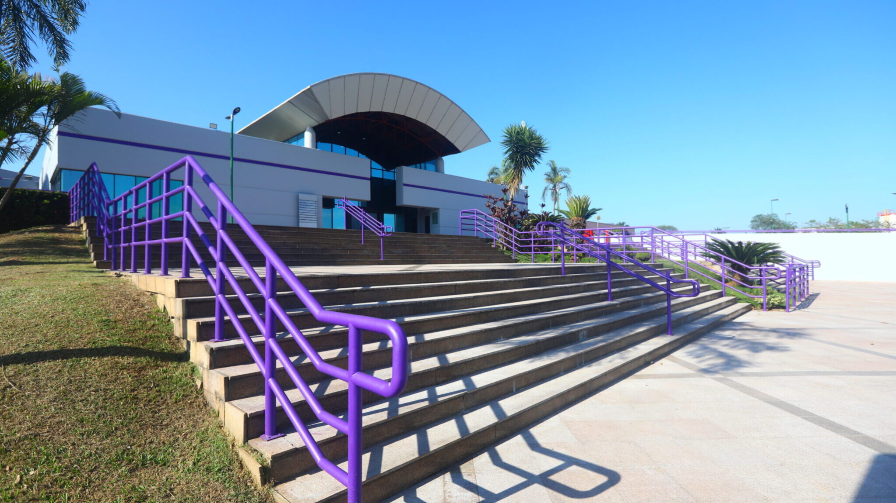

Sistema que orienta sua execução para treinar com técnica, segurança e eficiência. Evolua sua forma, não só seus números.
Correções de postura, amplitude e ritmo, com feedback simples para evoluir sua execução a cada treino.
Identifique desequilíbrios e pontos de ajuste: postura, amplitude e ritmo de execução.
Dicas claras durante o exercício para melhorar a forma com segurança.
Séries estruturadas para aprimorar padrões de movimento e progressão eficiente.
Técnica melhor, treino mais seguro e resultados que aparecem na performance do dia a dia.
Aprenda o padrão certo de movimento para cada exercício.
Reduza sobrecargas e riscos com ajustes simples de técnica.
Melhore força e resistência com movimentos mais eficientes.
Nossa missão é ajudar você a se movimentar melhor durante os exercícios, com orientação simples e baseada em evidências.
A interseção entre a saúde e a tecnologia, cada vez mais presente em nosso cotidiano, tem gerado soluções inovadoras para o monitoramento e a otimização das atividades físicas. Neste contexto, a 'Mundo Ativo' atualmente vem desenvolvendo uma solução mobile utilizando a visão computacional para monitorar, analisar a biomecânica e corrigir em tempo real os movimentos dos usuários durante a realização de atividades físicas em casa, inicialmente.
Importante destacarmos que nossa startup atualmente está incubada no Parque de Inovação Tecnológica de São José dos Campos - SP (PIT-SJC), através do programa Nexus Growth Digital, além de contar com outros programas de apoio.
Promover técnica, segurança e eficiência em cada treino, para resultados sustentáveis.
Ser referência em educação de movimento, unindo ciência e tecnologia.
Clareza, segurança, acessibilidade e foco total na experiência do usuário.
O Parque de Inovação Tecnológica de São José dos Campos (PIT-SJC) é um ecossistema dinâmico que fomenta a inovação e o empreendedorismo tecnológico no Vale do Paraíba. Como um dos principais polos de inovação do Brasil, o PIT-SJC reúne startups de base tecnológica, empresas consolidadas, universidades e centros de pesquisa em um ambiente colaborativo e estimulante.
Localizado estrategicamente em São José dos Campos, cidade reconhecida como um dos principais polos aeroespaciais e tecnológicos do país, o PIT-SJC oferece infraestrutura de ponta, laboratórios especializados e programas de aceleração que impulsionam o desenvolvimento de soluções inovadoras.
A Mundo Ativo tem o orgulho de fazer parte deste ecossistema por meio do programa Nexus Growth Digital, que nos proporciona mentoria especializada, networking estratégico e acesso a investidores. Esta parceria fortalece nosso compromisso em desenvolver tecnologias transformadoras para o setor de saúde e bem-estar, alinhando-se à missão do PIT-SJC de conectar conhecimento, tecnologia e mercado.
Além do suporte ao empreendedorismo, o PIT-SJC promove eventos, workshops e programas de capacitação que enriquecem nossa jornada de inovação, permitindo-nos criar soluções cada vez mais alinhadas às necessidades do mercado e dos usuários finais.

Sede do PIT-SJC, onde ideias inovadoras se transformam em soluções reais
Nossos parceiros e apoiadores que acreditam no nosso projeto